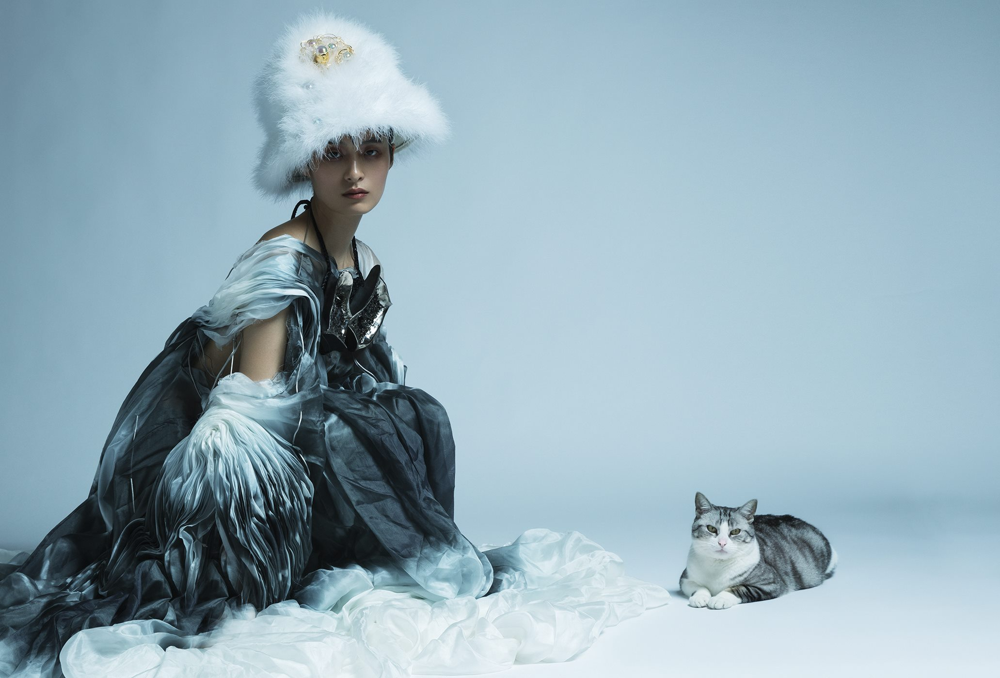
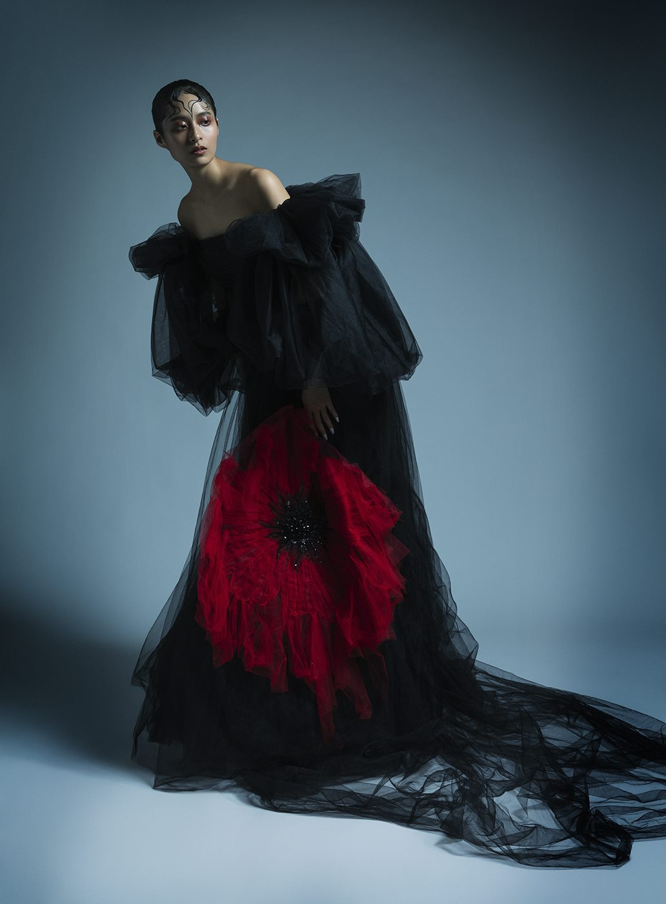
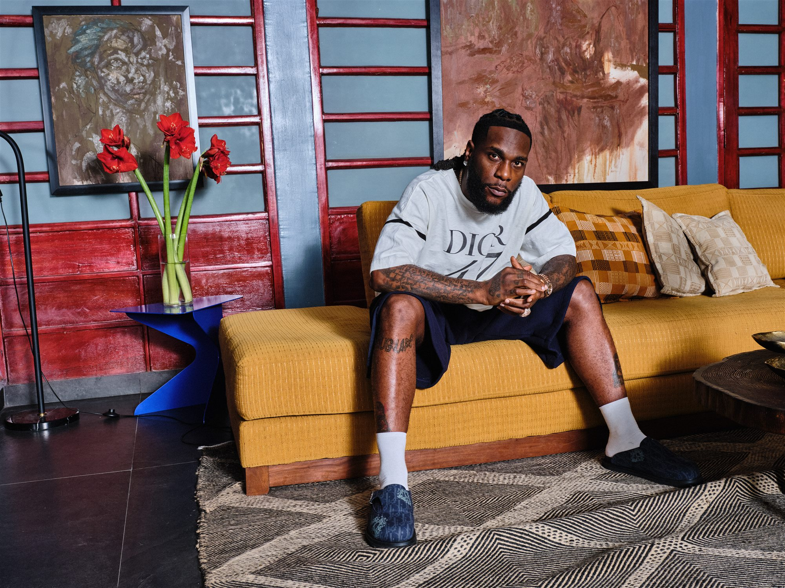
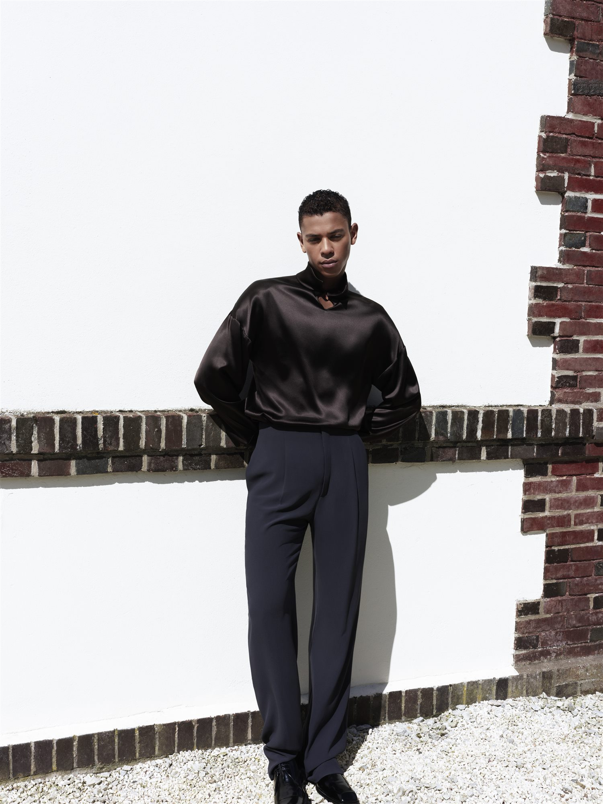
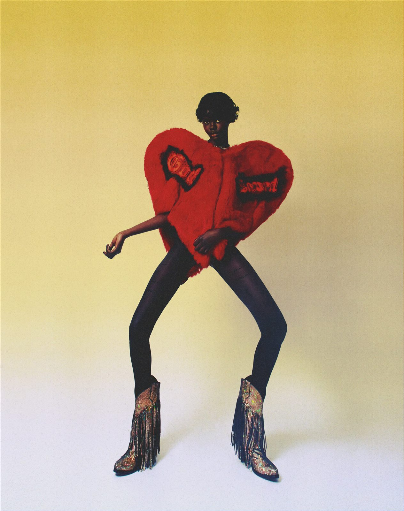
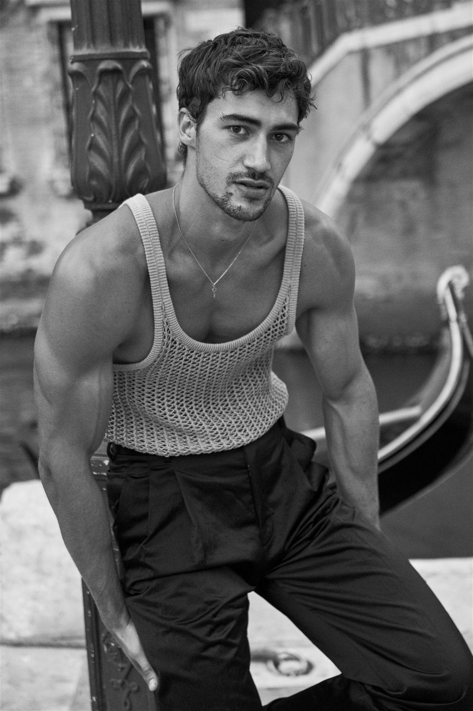
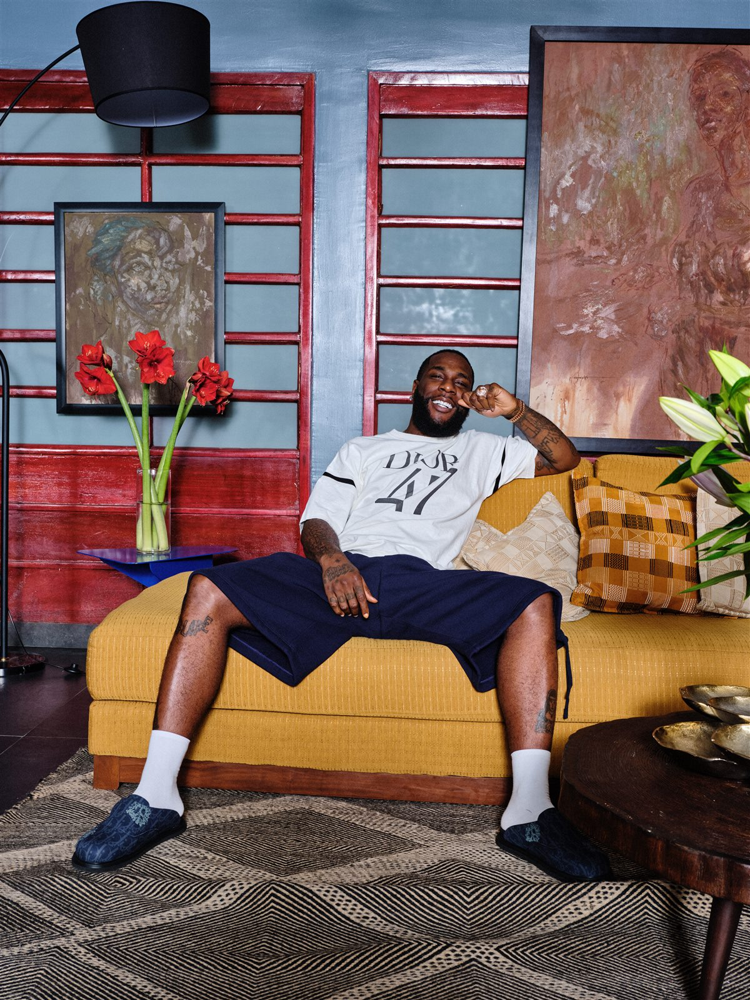
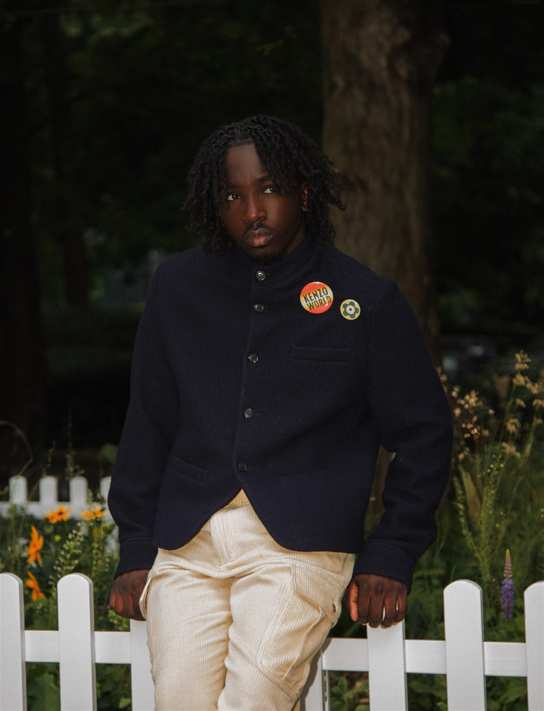

Editorial

Paris / Editorial / Campaign / Image Direction
Styling as visual tension, culture, and silhouette
Paris-based stylist, working across editorial, campaign, and image direction for houses including Dior, Jacquemus, and Dolce & Gabbana
View portfolioSelected Clients





Style is not about following. It is about arriving somewhere no one expected.
Selected Work
Editorial, campaign, lookbook, and personal image worlds
Campaign
HTSI - Burna Boy, Lagos interior story

Open projectLookbook
Guillaume Diop - Tailoring, sunlight, restraint

Open projectPersonal work
Rodeo Love - Shape, attitude, and distance

Open projectEditorial
Merchants of Venice - Man About Town

Open projectCampaign
HTSI - Portrait study and styling rhythm
 Open project
Open project
Behind the scenes
BTS - Light, furniture, and styling composition
Open project
Behind the scenes
BTS - Texture checks and color decisions

Open projectPersonal work
Wonderland - Youth, silhouette, and attitude
Social Proof
Trusted by fashion houses, editors, and image makers
Wilow brings a precise eye to proportion, culture, and the emotional charge of a look.
Editorial collaborator
As seen in